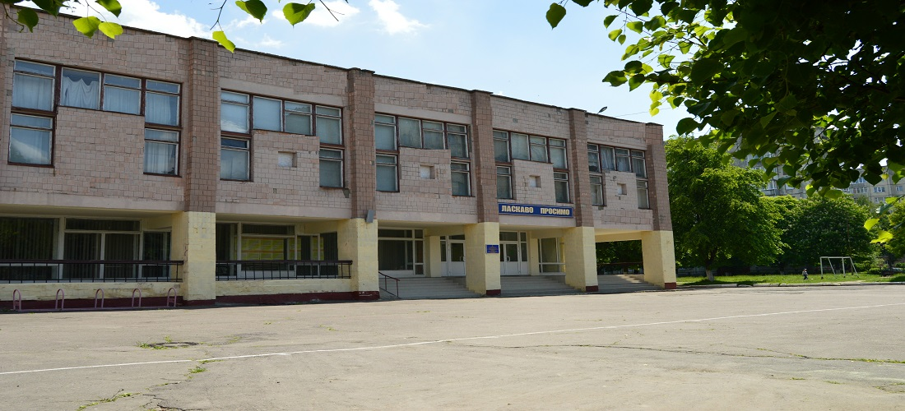
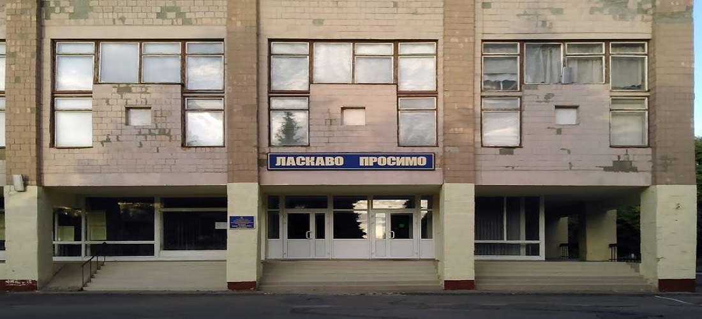

«Луцьке вище професійне училище» – державний професійно-технічний навчальний заклад, заснований у 1966 році не базі Луцького машинобудівного заводу. 3 1983 року другим базовим підприємством став ДПЗ-28, за кошти якого і був збудований сучасний комплекс училища на 780 місць. Створені хороші умови для навчання та відпочинку учнів: навчальний корпус з просторими, світлими кабінетами, лабораторіями, майстернями, оснащеними новітнім обладнанням, актова і спортивна зали, їдальня, спортивний майданчик та дев’ятиповерховий гуртожиток.
В 1984 році училище реорганізоване в середнє , що дало можли5вість разом з робітничою кваліфікацією отримувати середню освіту, а в 1993 році стало вищим професійним училищем і стало готувати (крім висококваліфікованих робітників) молодших спеціалістів.
За 50 років в училищі підготовлено більше 20 тисяч кваліфікованих робітників та понад 1-ну тисячу молодших спеціалістів з 4-х спеціальностей. На сьогоднішній день вони наповнюють робітничі колективи АТ “СКФ Україна”, АТ АК “Богдан Моторс” ДП “Автоскладальний завод №1” та багатьох інших підприємств. Училище першим в області розпочало підготовку операторів комп’ютерного набору, і сьогодні тут є три комп’ютерні лабораторії та два кабінети з найсучаснішим обладнанням та доступом до мережі Internet
Особлива увага звертається на матеріально-технічну базу та комплексно-методичне забезпечення майстерень та лабораторій, що є основою підготовки висококваліфікованих робітників.
За роки існування в училищі сформувався висококваліфікований інженерно-педагогічний колектив. Фахову і загальноосвітню підготовку здійснюють 94 педагоги. Серед них 19 відмінників освіти, 21 викладач вищої категорії, 16 майстрів виробничого навчання мають робітничу кваліфікацію 5-го та 6-го розрядів, а 6 – робітничу кваліфікацію з двох і більше професій. 72 відсотки майстрів виробничого навчання мають вищу, а всі інші – середню спеціальну освіту. Сьогодні училище – це сучасний навчальний заклад, який має необхідну матеріальну базу, кваліфіковані педагогічні кадри, багатий досвід роботи з підготовки робітничих кадрів високої кваліфікації.